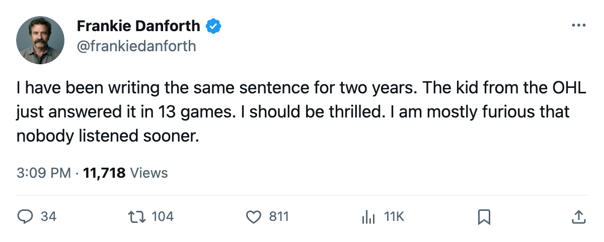

TOR
TORDANFORTH: Code Yellow, $11.90M for 6 points, and the 19-year-old who answered my question while I was still asking it
I have wanted a second-centre since December 2004. The kid on the second line has 12 points. The man I paid for has 6. I am not sure which part of that I am mad about.
 Frankie DanforthColumnist · Queen City Telegram
Frankie DanforthColumnist · Queen City Telegram
Code Yellow

The Panic Meter reads Code Yellow. Nine wins, two losses, 6 straight. A +22 goal differential. The division lead. And I am not comfortable, because the shot sheet keeps saying something the scoreboard refuses to listen to.
Atlanta put 31 shots on our net. We put 16 back. We scored 6 goals in that game. Tampa Bay put 36 on us Saturday. We had 33. The wins came anyway. I cannot explain it and I do not trust it.
The winger I did not want
 Marian Gaborik99 is a 99 in the Book. The Development Index has him at +11 form, the highest riser on our club. He is playing 20.9 minutes a night. In 12 games he has 5 goals and 1 assist. Six points.
Marian Gaborik99 is a 99 in the Book. The Development Index has him at +11 form, the highest riser on our club. He is playing 20.9 minutes a night. In 12 games he has 5 goals and 1 assist. Six points.
His contract reads $11.90M over 5 years. That is the third-highest salary on the roster. For six points, the cost per point runs to the moon. Compare that to Petr Chlup87, who is 19, who has 12 points in 13 games at $2.34M, who skates the second line centre at 19.7 minutes a night. I am not trading a 99 for a boy with a 95 ceiling. I am telling you the math is ugly.
The centre problem, solved by nobody I endorsed
I have written the same sentence since December 2004: the Leafs need a second centre behind  Mats Sundin92.
Mats Sundin92.  Brad Richards87 was supposed to be him. Richards has 8 points in 13 games at $6.70M, skating third-line minutes at 13.0 a night. That is not a second centre. That is a 25-year-old third-liner with a second-line salary.
Brad Richards87 was supposed to be him. Richards has 8 points in 13 games at $6.70M, skating third-line minutes at 13.0 a night. That is not a second centre. That is a 25-year-old third-liner with a second-line salary.
And then Chlup shows up. 19. Overall 87. Potential 95. 12 points in 13. On the second line with  Stanislav Chistov87 on the left and
Stanislav Chistov87 on the left and  Maxim Afinogenov86 on the right, all three in their early twenties, all three skating 17 to 20 minutes. The line works because the centre works. He wins the draw, he carries it in, he makes the pass that sets up the winger. I do not need Sundin to carry 22.2 minutes every night to watch a centre control a shift. I need someone to do it behind him, and Chlup is doing it.
Maxim Afinogenov86 on the right, all three in their early twenties, all three skating 17 to 20 minutes. The line works because the centre works. He wins the draw, he carries it in, he makes the pass that sets up the winger. I do not need Sundin to carry 22.2 minutes every night to watch a centre control a shift. I need someone to do it behind him, and Chlup is doing it.
What Code Yellow means
Green is everything on the sheet saying the team is playing well. Orange is when the results turn and the underlying problems catch up. We are in the middle. The results are not turning yet. The shot gap is not catching up yet. But $11.90M for six points, and a possession number that puts us behind the net in 2 of the last 3, tells me that the cushion is thinner than 7 division points makes it look.
Boston has 2 games in hand. Their record is 6-3-1 with 15 points. If they win both, the gap between first and second is 3 points and the Norris winner gets to sit on the bench watching 19-year-olds play his minutes. I will take 9 and 2. I will take 6 straight. But I will not pretend the shot sheet says the same thing the standings do.
Code Yellow. 36 shots against in an overtime win against a 4-2-5 Tampa Bay club means the floor is closer than the ceiling.
